附加品
共 981 个附加品 · 第 7/7 页
| 名称 | 稀有度 | 效果 | 所属 |
|---|---|---|---|
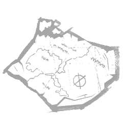 未完成的地图 Unfinished Map |
精贵 | 记载了后来被称为百慕大三角的区域的细节。使受到猎犬感知影响的逃生者同时受到疲惫状态效果影响，持续15秒。 | 猎犬主人 |
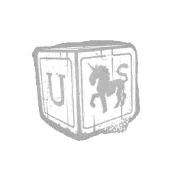 独角兽积木 Unicorn Block |
精贵 | 一块白红相间的木块，描绘着一匹欢腾的独角兽和字母“U”。碎裂的梦境木板的引爆半径增加+0.5米。 | 梦魇 |
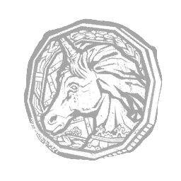 独角兽徽章 Unicorn Medallion |
稀有 | 一枚刻有华丽独角兽的古老奖章。它被收藏了多年。第一次冲撞的持续时间增加20%。第二次冲撞的持续时间减少20%。 | 幕后黑手 |
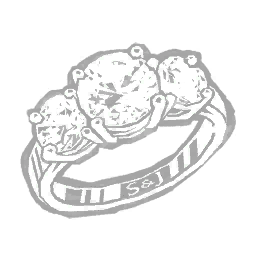 独一无二的婚戒 Unique Wedding Ring |
传说 | 一枚刻有花纹的婚戒，自迷雾中出现，并散发出一种难以言喻、无法理解的能量。修改钥匙，附带以下效果：血祭品的气场将永久对你可见。你的气场将对血祭品永久可见。独特婚戒被动地施加其效果，无需主动使用钥匙。通过将默认值降低 -100%，降低你成为初始血祭品的几率。 | |
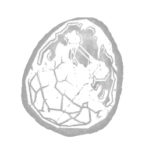 未知卵 Unknown Egg |
传说 | 一枚被恐怖蛛网包裹的大而温暖的蛋。深渊的恢复时间 -2.5 秒。"在颠倒世界中目击到一枚大蛋，但没有任何样本能在送往实验室进行正式检查的途中存活下来。"——霍金斯国家实验室 | 俄摩拉虫 |
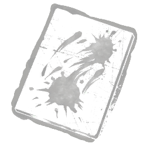 无题之痛 Untitled Agony |
罕见 | 一幅在马蒂亚斯死后被黑色油漆涂抹、挥洒的画布。它散发着沉重、令人崩溃的悲伤。被乌鸦群包围的逃生者受到-15%的减速状态效果，持续1.5秒。 | 艺术家 |
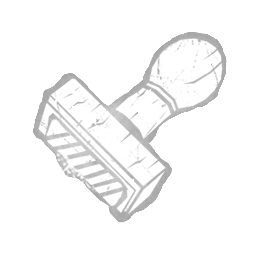 不寻常的印章 Unusual Stamp |
罕见 | 图标描述 价格 该附加品已退役（该可解锁物品在过去已被移除，在当前游戏中不再存在。）"一个带有交叉影线橡胶垫的木制印章，用于..." | |
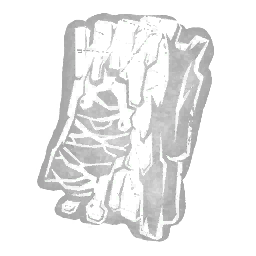 颠倒树脂 Upside Down Resin |
传说 | 一种粘稠易燃的树液，强化了通往跨维度隧道的入口。传送门封印时间 +20%。"样本取自曾用作入口的树皮。迄今为止，我们对其效果的结论尚无定论。"——霍金斯国家实验室 | 俄摩拉虫 |
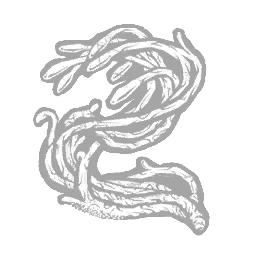 衔尾蛇触须 Uroboros Tendril |
稀有 | 数十年生化有机武器研究的成果。在吞噬整个世界之前它不会停下。蓄力剧毒冲撞时，你的移动速度增加5%。 | 幕后黑手 |
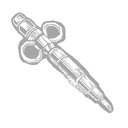 衔尾蛇病毒 Uroboros Virus |
传说 | 对某些人而言，力量和抵抗力值得付出这样的代价。当逃生者达到危急感染时，其气场会暴露4秒。“世界的平衡正在改变……而你对此浑然不觉。”——里卡多·欧文 | 幕后黑手 |
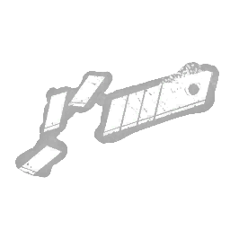 实用刀片 Utility Blades |
罕见 | 对反向捕兽夹的改装：夹子内部附着的锋利刀片会在受害者每次移动时造成割伤。被反向捕兽夹夹住的逃生者，无论因任何方式受伤，都会受到出血状态效果影响。 | 猪女 |
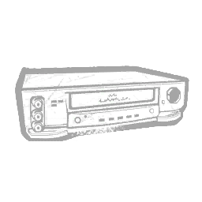 录像机 VCR |
传说 | 播放过贞子录像带的原始录像机。摸上去仍有温度。使用投射时，使所有电视机产生投射效果。 | 般若 |
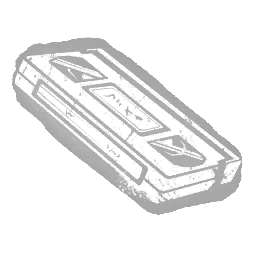 VHS 成人录像 VHS Porn |
稀有 | 永恒的经典。你将无法再用同样的眼光看待事物。修改兴奋剂的效果：毒气云的尺寸和扩散范围增加+10%。 | 小丑 |
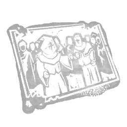 瓦尔特教派照片 Valtiel Sect Photograph |
精贵 | 一张照片，照片中两个身着红兜帽的身影。题为《诸神的绯红与纯白盛宴》。每有一名受折磨状态下的逃生者，你获得以下效果： terror radius缩小-2米，最多-8米。 | 刽子手 |
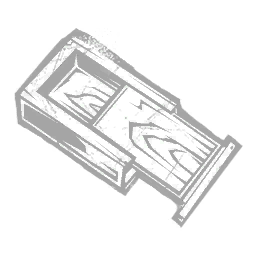 消失的盒子 Vanishing Box |
精贵 | "这位魔术师在儿童聚会上很受欢迎，并迅速成为头号嫌疑人。"修改 | 未知者 |
| 化妆镜 Vanity Mirror | 传说 | 一面立式便携化妆镜，除表面覆着一层薄薄的灰尘与散粉外，完好无损。强化邪恶化身，效果为：邪恶化身结束时消耗4点邪恶奥能。 | 变形者 |
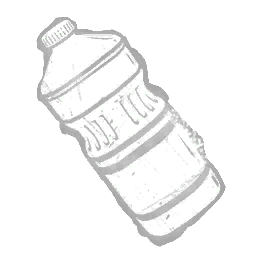 植物油 Vegetable Oil |
稀有 | 用于劣质润滑的变质油。布巴的电锯冷却时间减少0.3秒。 | 食人魔王 |
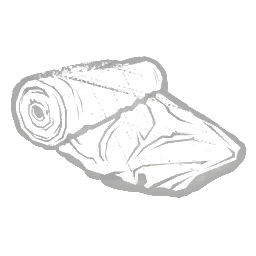 天鹅绒布 Velvet Fabric |
罕见 | 卡米娜在艺术项目中使用的醒目红色布料。它的鲜艳与黑色羽毛形成鲜明对比。逃生者开始驱散乌鸦群后，乌鸦群的气场向你显现的时间额外持续1.5秒。 | 艺术家 |
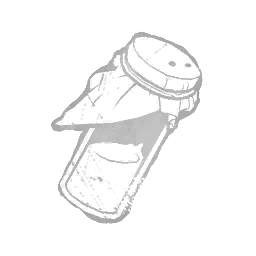 剧毒药剂 Venomous Concoction |
精贵 | 一种涂在斧刃上的毒剂。这种浑浊的混合物主要由蝰蛇毒液构成，使其具有致疲效果。被斧头击中的逃生者会受到“疲惫”状态效果影响，持续 5 秒。 | 女猎手 |
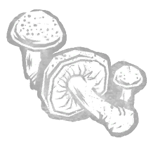 朱红毒丝菌 Vermilion Webcap |
传说 | 来自颠倒世界的亮红色毒蘑菇。穿越颠倒世界后，获得以下效果：从传送门出现后获得的无法侦测状态效果持续时间延长 +3 秒，至 8 秒。"仍在用该样本进行实验，迄今为止我们的结果并不一致。"——霍金斯国家实验室 | 俄摩拉虫 |
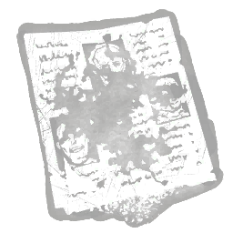 生动讣告 Vibrant Obituary |
稀有 | 沾着鲜艳醒目油漆的废旧报纸。似乎悲剧每天都在上演。猎杀直觉持续时间+3秒。 | 艺术家 |
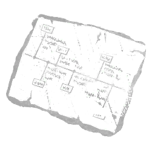 受害者详细日程 Victim's Detailed Routine |
传说 | 一张撕下的纸张，概述了奥尔森在罗斯维尔的第一位受害者的每周作息。掌握受害者的习惯能让你预判他们的行动。标记他们后，逃生者受到5秒的疲惫状态影响。“我已经观察你一段时间了。我希望这次能特别一些；那种人们不会忘记的头条新闻。”——鬼面 | 鬼脸 |
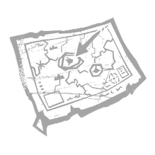 受害者地图 Victim's Map |
罕见 | “他以为解开谜团的关键在森林之外，并担心自己再也无法回来。”成功执行注视未知者动作的逃生者会受到以下效果影响：触发杀手直觉，持续 3 秒。 | 未知者 |
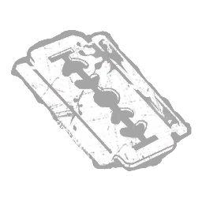 维克多的剃须刀片 Victor's Razor Blade |
精贵 | "在悲痛之中，亨利的父亲用暗藏的刀刃挖掉了自己的双眼。" 修改碎界者，效果：结束时，受伤的逃生者获得不治状态效果，持续20秒。 | 先驱者 |
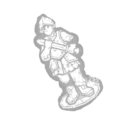 维克多的士兵 Victor's Soldier |
传说 | 一只维克托害怕时紧紧抱着的玩具士兵。它身上有种东西唤起了夏洛特的嫉妒。在操控夏洛特时碾碎维克托后，显示逃生者气场6秒。"Kch——kch——k'ull bawd mennn……" ——维克托·德谢 | 双胞胎 |
| 视频会议设备 Video Conference Device | 精贵 | 许多复杂的阴谋都是在这样一台设备上策划的。使逃生者的感染计时器减少 -30%。 | 幕后黑手 |
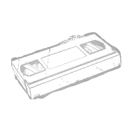 录像带 Video Tape |
活动 | 一段竖锯向阿曼达解释游戏规则的录音。追忆过去的自己令她的决心更加坚定。所有逃生者在试炼开始时都会戴上一个反向捕兽夹。 | 猪女 |
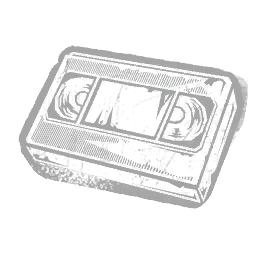 录像带复制件 Videotape Copy |
稀有 | 带有贞子印记的致命录像带复制品。它削弱了复仇的欲望。使投射导致的谴责在电视机周围的生效半径扩大+2米。 | 般若 |
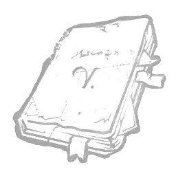 维果的日记 Vigo's Journal |
传说 | 一个声称从虚空归来的人的日记。其中的知识具有实际应用价值。在冲刺期间获得无法侦测状态效果。“在遗忘了梦想与无尽日常的荒原中，有出路的人就是上帝。”——塔尔博特·格莱姆斯 | 枯萎者 |
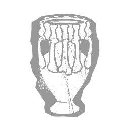 污秽催吐剂 Vile Emetic |
传说 | 一瓶气味恶臭、半凝结的药剂，成分不明。饮用后会迅速引发呕吐，用以驱除体内邪恶。使肮脏净化与腐败净化的投射物速度提升10%。 | 瘟疫 |
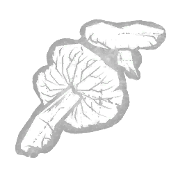 紫蜡盔菌 Violet Waxcap |
精贵 | 来自颠倒世界的深色肉质蘑菇，使魔王能够通过心灵感应扭曲猎物的感官。穿越颠倒世界后，获得以下效果：从传送门出现后获得的无法侦测状态效果持续时间延长 +1 秒，至 6 秒。 | 俄摩拉虫 |
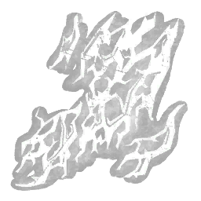 粘性蛛网 Viscous Webbing |
罕见 | 潮湿而富有弹性的蛛网，拓宽了跨维度隧道。传送门的封印时间延长10%。 | 俄摩拉虫 |
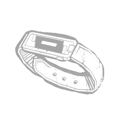 访客腕带 Visitor Wristband |
稀有 | 一款供设施访客使用的电子保护伞腕带。它同时也兼作追踪装置。僵尸的逃生者侦测范围增加 +2 米。僵尸的视野范围增加 +10 °。 | 复仇女神 |
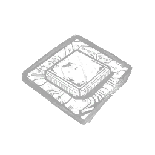 要害瞄准处理器 Vital Targeting Processor |
精贵 | 无人机的程序中附加的一个进程能更准确地预测潜在猎物的弱点。使被无人机侦测到的被爪钩陷阱困住的逃生者受到的减速状态效果强度提高 -2%。 | 骷髅商人 |
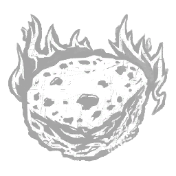 火山石 Volcanic Stone |
稀有 | 它诞生之地的炽热在这块活石中跃动闪耀。修改雾瓶，获得以下效果：雾云装填时间减少 -5 秒。 | |
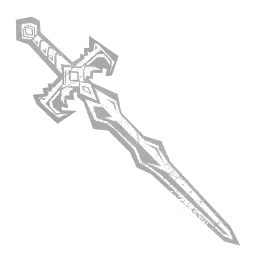 锋利剑 Vorpal Sword |
活动 | “一件强大的魔法 artefact，其刀刃已使许多头颅与随身之躯分离。” 受伤的逃生者每次进入驱散球体范围时，获得以下效果：施加破损状态效果，持续 30 秒。 对魔法之手法术施加以下效果：使其能够破坏已倒下的板窗。此动作需 4 秒完成。“只有一个人曾从我面前走过，并活着为此后悔。”——韦克娜 | 巫妖 |
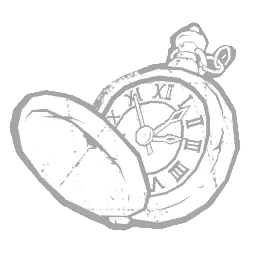 等你手表 Waiting For You Watch |
精贵 | 智勋在现场演出《I'll Be Waiting For You》时佩戴的怀表。是一个无法使用、也永远不会运作的舞台道具。揭示完全从撕裂状态恢复的逃生者的灵光 10 秒。"不要逃跑／不要说我们结束了／无处可逃／我会等你"——NO SPIN 的《Waiting For You》 | 小丑女 |
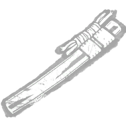 胁差鞘 Wakizashi Saya |
传说 | 祖传刀刃的刀鞘。曾为山冈家族打造。在相位步期间按下主动能力按钮，可立即在残壳所在位置重新出现。 | 怨灵 |
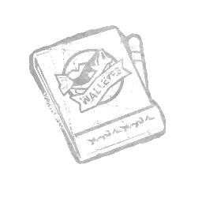 墙眼火柴盒 Walleye's Matchbook |
稀有 | 一盒来自沃尔利酒吧的火柴，那是北罗斯维尔的一家小酒吧。受害者的电话号码用蓝色笔草草写在上面。这是被发现的罪证之一。能量充能时间减少2秒。 | 鬼脸 |
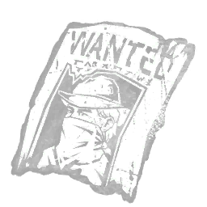 通缉令 Wanted Poster |
精贵 | 在一场疯狂枪战中击穿迦勒下颚的子弹。它唤起了炽烈的复仇渴望。瞄准（Aim Down Sights）期间，你的移动速度提升 +3%。"你终将迎来猛烈的清算，我以我母亲的坟墓起誓。" —— 迦勒·奎因 | 死神之枪 |
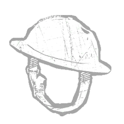 战盔 War Helmet |
精贵 | 在阿尔卑斯山调查一处重叠区时，她发现了一座废弃的战争地堡。在重叠区差点吞没她之后，她从里面拿走了一顶头盔。 夜幕期间使杀手本能的持续时间增加+1.5秒。 | 深潜者 |
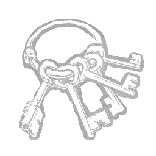 狱长钥匙 Warden's Keys |
精贵 | 钥匙沉闷的碰撞声激起了迦勒心中狂怒的记忆。使救赎者的装填时间缩短 -0.35 秒。 | 死神之枪 |
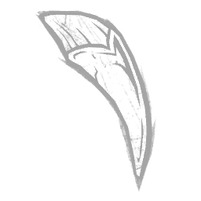 座狼之牙 Warg's Fang |
传说 | 一件从德古拉最危险的盟友手中夺得的强力毁灭工具。在狼形态下，每当猛扑攻击可用时，你获得以下效果：你已收集的气味球的气场将向你显现 5 秒。 | 黑暗领主 |
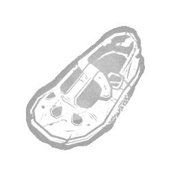 浸水鞋子 Waterlogged Shoe |
活动 | 一只迷失在沼泽水中许久的童鞋。其中封存的生命精华解锁了女巫力量的巨大潜力。默认移动速度永久提高 7.5%，达到 4.73 米/秒。在幻影陷阱的触发范围内，逃生者会受到 -9% 的受阻状态效果。禁用你传送至已触发幻影陷阱的能力。 | 女巫 |
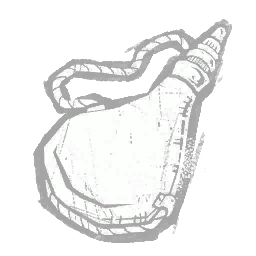 水袋 Waterskin |
精贵 | 她把自己最后的水给了他，因为她知道追猎需要力量。重定向追逐路径的距离增加20%。 | 猎犬主人 |
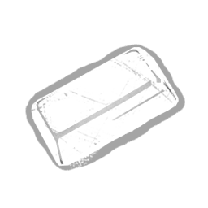 蜡砖 Wax Brick |
罕见 | 一块用于降低摩擦、便于机械部件运转的蜡块。使捕兽夹的救援与挣脱时间 +33%。 | 设陷者 |
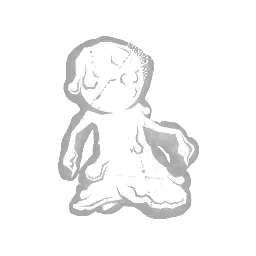 蜡娃娃 Wax Doll |
罕见 | 一尊以蜡雕成的玩偶，由一名即将面临审判的囚犯亲手制作。作用：使「诅咒之惩」的有效距离增加 +5%。 | 刽子手 |
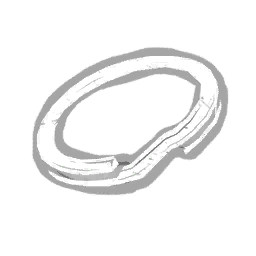 编织指环 Weaved Ring |
传说 | 图标 描述 费用 此附加品已被移除（此可解锁内容在过去已被移除，不再存在于当前游戏中。）“一个外表平凡的钥匙环，带有奇特的蓝色光泽... | |
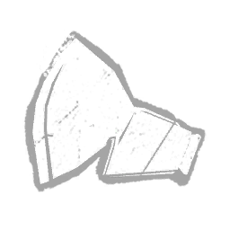 加重斧头 Weighted Head |
罕见 | 一个配重奇特的飞斧斧头，旨在对目标造成沉重打击。它需要使用者拥有强壮的手臂。被飞斧击中的逃生者会受到无法行动状态效果影响，持续10秒。 | 女猎手 |
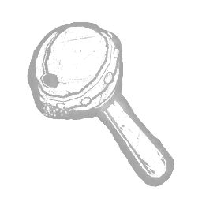 沉重拨浪鼓 Weighty Rattle |
精贵 | 一个粗制滥造的拨浪鼓，维克托一直哭闹，直到他母亲为他偷来为止。它实在太重了，不该交给一个孩子。移除附着中的维克托会使逃生者受到危险状态影响，持续20秒。 | 双胞胎 |
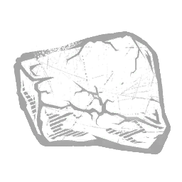 井石 Well Stone |
罕见 | Sadako 被囚禁的那口井的一块碎片，那画面烙印在所有看过录像之人的脑海之中。使电视逃生者的出现时间减少 -7 秒。 | 般若 |
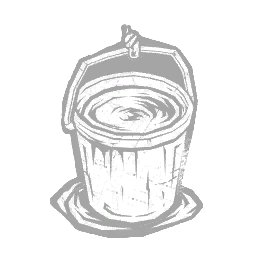 井水 Well Water |
精贵 | Sadako 被留下死去的那口井中的水。浑浊漆黑，遮蔽着周围的一切。使你以任意方式现形后，无法被侦测状态的持续时间增加 +2 秒。 | 般若 |
| 白发带 White Hair Ribbon | 罕见 | 一条用来束住乱发的丝质发带。使“山冈的作祟”的充能速度提升 +20%。 | 怨灵 |
| 白色篦子 White Nit Comb | 稀有 | 从诊所取来的除虱梳。曾经是一位焦虑病人与她护士之间深厚羁绊的象征。为闪现攻击计分事件提供 +100% 额外血点。使特殊攻击的突进持续时间减少 -0.15 秒，从而使你的攻击范围减少 -50%。 | 女护士 |
| 白狼徽章 White Wolf Medallion | 罕见 | 一件曾用于召唤伟大灵魂向导的小饰品。修改狼形态，效果如下：杀手本能持续时间 +1 秒。 | 黑暗领主 |
| 广角镜片 Wide Lens | 稀有 | 一块完好无损的纤薄宽镜片。设计用于扩散手电筒光束，但会降低其有效范围。光束宽度增加 +25%。光束射程减少 -25%。 | |
| 柳环 Willow Wreath | 精贵 | 三根纤细的柳枝编成的三角形花环。幻影陷阱的气场向你显示 5 秒。 | 女巫 |
| 羽翼靴 Winged Boots | 罕见 | 一直以来都被它的佩戴者用于快速移动。使传送技能获得以下效果：传送距离提升 +20%。 | 黑暗领主 |
| 线圈 Wire Spool | 罕见 | 便携但沉重的铜线卷。使工具箱充能上限+12。 | |
| 木狐 Wooden Fox | 传说 | 粗糙雕刻的狐狸小雕像，仅有几英寸大小。提醒人们，潜行与狡诈与蛮力同样有效。在储物柜装填后，获得不可察觉状态效果，持续30秒。 | 女猎手 |
| 木马 Wooden Horse | 稀有 | 用廉价木材雕成的未上色马形玩具。曾经是一位紧张症患者与他护士之间深厚羁绊的象征。使未命中特殊攻击所施加的额外疲惫时间减少 -0.5 秒。 | 女护士 |
| 木鬼面 Wooden Oni Mask | 精贵 | 加赞为庆祝节分而买来的一副面具，它那张布满獠牙、令人不适的嘴从此开始萦绕于他的噩梦之中。受伤逃生者生成血球的频率提升 +14%。逃生者进行特定互动时生成的血球数量 +1。「人之所以如此熟悉恶魔，绝非巧合。」——廉次郎教义 3:8 | 鬼武者 |
| 木板 Wooden Plank | 稀有 | 一块从舞台撕下的木板——奥托·斯坦珀在那里处决了一名多管闲事的记者。 使夜幕槽中因挂起逃生者而增加的充能提升+25%。 | 深潜者 |
| 羊毛衫 Wool Shirt | 稀有 | 一件小男孩的橙黄条纹衬衫。上面缝有写着“杰西”的名牌。碎裂的梦境木板的引爆延迟减少-10%。 | 梦魇 |
| 工坊润滑油 Workshop Grease | 罕见 | “一管简单的油脂，用于润滑袖剑的机关。” 修改伏击冲刺攻击，获得以下效果：其充能速度提高 +50%。 | 猪女 |
| 解忧石 Worry Stone | 精贵 | 奥托马人被要求只许想positive的事情，但有人仍把这些石头放在口袋里，在浮现负面念头时拿出来摩挲。 锁定光环6秒。 | 深潜者 |
| 崇拜碑 Worship Tablet | 传说 | 一块镶金石碑，刻有原本用于崇拜被遗忘神祇的腐化咒文的图画与文字。在奉献之池的饮用速度提升100%。手持腐败净化时，你的移动速度提升4.4%。 | 瘟疫 |
| 蠕动的蛆 Wriggling Maggots | 罕见 | 从藏在棉花家的一具尸体口中涌出的幼虫。附身锁链的转向速率增加 +15%。 | 地牢修女 |
| 蠕动的寄生虫 Wriggling Parasite | 罕见 | “一种对宿主产生异常效果的脆弱生物。”修改吸血量表并赋予以下效果：充能速率提高 +16%。 | 浮屠鬼 |
| 辟邪护身符 Yakuyoke Amulet | 传说 | 一枚强大的护身符，保护你的行动免遭可疑状况阻碍。使“相位行走”的持续时间延长 +3.5 秒。相位行走期间移动速度降低 -15%。 | 怨灵 |
| 山冈指物 Yamaoka Sashimono | 精贵 | 山冈家族的旗帜，和斩从中感受到无比的自豪。血腥狂怒的持续时间增加 +8 秒。 | 鬼武者 |
| 活动 | 由一位来自第13区、以折磨为乐的食尸鬼穿着。在暴怒模式下钩住逃生者会触发以下效果：使40米以外的所有逃生者尖叫，并向你暴露其位置，持续3秒。 | 食尸鬼 | |
| 长尺 Yardstick | 精贵 | 适合用来丈量距离。用它来狠狠干一架更合适。释放疾跑（Scamper）会显示你周围16米内幸存者的灵光（Aura），持续3秒。 | 好人 |
| 黄色电线 Yellow Wire | 罕见 | 图标描述 价格 该附加品已退役（该可解锁物品在过去已被移除，在当前游戏中不再存在。）"一根可缠绕在地图上的细小电线..." | |
| 泛黄布料 Yellowed Cloth | 稀有 | 一块用于处理水泡和擦拭脓液的简单布料。使斧头的投射物速度提高 +10%。 | 女猎手 |
| 紫杉籽酒 Yew Seed Brew | 罕见 | 图标 描述 花费 此附加品已退役（此可解锁物品已在过去退役，不再存在于当前游戏中。）一种有毒的药剂，涂抹在飞斧的刀刃上。这种浓稠的... | 女猎手 |
| 紫杉籽药剂 Yew Seed Concoction | 精贵 | 图标 描述 花费 此附加品已退役（此可解锁物品已在过去退役，不再存在于当前游戏中。）一种有毒的混合物，涂抹在飞斧的刀刃上。这种... | 女猎手 |
| 阳一的渔网 Yoichi's Fishing Net | 罕见 | 余一和祖父钓鱼时使用的渔网。提醒我们死亡终将降临于所有人。逃生者获得至少4层谴责后，会受到致盲状态效果影响。 | 般若 |
| 嫩椰子 Young Coconut | 稀有 | 她作为落难者的第一餐，与忠实的伙伴一同分享。猎犬的追逐速度增加5%。 | 猎犬主人 |
| 丧尸心脏 Zombie Heart | 罕见 | 被开膛破肚的僵尸的心脏。被视为有害废弃物，因为其中必定滋生着病毒。在用触手猛击攻击命中僵尸后，变异率增益提高 +0.75 点。「言语对这种东西毫无用处。」——里昂·斯科特·肯尼迪 | 复仇女神 |
| 草履 Zōri | 稀有 | 一双穿着舒适的平底凉鞋，穿脱都很方便。相位行走期间移动速度提升 +5%。 | 怨灵 |